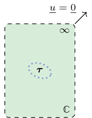

import numpy as np
from echoes import *
import math
np.set_printoptions(precision=8, suppress=True)
# to display only 8 significant digits of array components5 Eshelby and Hill polarization tensors
The Eshelby inclusion problem in elasticity (Eshelby, 1957)
Let the studied domain be the whole \(\R^3\) space here filled with a linear elastic material of uniform stiffness tensor \(\uuuu{C}\). An ellipsoid centered at the origin of the domain is defined by the equation
\[ \uv{x}\in\mathcal{E}_{\uu{A}} \quad\Leftrightarrow\quad \uv{x}\cdot(\trans{\uu{A}}\cdot\uu{A})^{-1}\cdot\uv{x}\leq 1 \tag{5.1}\] where \(\uu{A}\) is an invertible second-order tensor so that \(\trans{\uu{A}}\cdot\uu{A}\) is a positive definite symmetric tensor associated to 3 radii (eigenvalues \(a\geq b \geq c\) possibly written \(\rho_1 \geq \rho_2 \geq \rho_3\) for convenience) and 3 angles (orientation of the frame of orthonormal eigenvectors \(\uv{e}^{\uu{A}}_1, \uv{e}^{\uu{A}}_2, \uv{e}^{\uu{A}}_3\)) \[ \trans{\uu{A}}\cdot\uu{A}=a^2 \uv{e}^{\uu{A}}_1\otimes\uv{e}^{\uu{A}}_1 + b^2 \uv{e}^{\uu{A}}_2\otimes\uv{e}^{\uu{A}}_2 + c^2 \uv{e}^{\uu{A}}_3\otimes\uv{e}^{\uu{A}}_3 = \sum_{i=1}^3 \rho_i^2 \uv{e}^{\uu{A}}_i\otimes\uv{e}^{\uu{A}}_i \]
A polarization field is introduced as a second-order symmetric tensor field \(\uu{\tau}\) such that the constitutive law of the medium is given by
\[ \sig(\x)=\uuuu{C}:\eps(\x)+\uu{\tau}(\x)\quad\textrm{where}\quad \uu{\tau}(\x)= \left\{ \begin{array}{ll} \uu{0}&\textrm{ if }\x \notin \mathcal{E}_{\uu{A}}\\ \uu{\tau}\textrm{ (uniform)}&\textrm{ if }\x \in \mathcal{E}_{\uu{A}} \end{array} \right. \tag{5.2}\]
In addition the displacement tends towards \(\uv{0}\) at infinity.

The important result derived in (Eshelby, 1957) is that the strain tensor field solution to this problem is uniform within the ellipsoidal domain (not outside!) and writes
\[ \forall \x \in \mathcal{E}_{\uu{A}},\quad \eps(\x)=-\uuuu{P}:\uu{\tau}\quad\textrm{(uniform)} \tag{5.3}\] where \(\uuuu{P}\), called the Hill polarization tensor, depends on the shape and orientation of the ellipsoid (i.e. \(\uu{A}\) up to a multiplicative constant) and on the matrix behavior (i.e. \(\uuuu{C}\)), in other words \(\uuuu{P}=\uuuu{P}(\uu{A},\uuuu{C})\). See in Appendix B explicit expressions to calculate the Hill polarization tensor.
The polarization problem can be alternatively posed thanks to an eigenstrain tensor \(\eps^*\), uniform in the ellipsoid, such that \(\eps^*=-\uuuu{C}^{-1}:\uu{\tau}\). It follows that (5.2) rewrites
\[ \sig(\x)=\uuuu{C}:(\eps(\x)-\eps^*(\x))\quad\textrm{where}\quad \eps^*(\x)= \left\{ \begin{array}{ll} \uu{0}&\textrm{ if }\x \notin \mathcal{E}_{\uu{A}}\\ \eps^*\textrm{ (uniform)}&\textrm{ if }\x \in \mathcal{E}_{\uu{A}} \end{array} \right. \tag{5.4}\] and the Eshelby tensor \(\uuuu{S}\) is introduced by rewriting (5.3) under the form \[ \forall \x \in \mathcal{E}_{\uu{A}},\quad \eps(\x)=\uuuu{S}:\eps^*\quad\textrm{where}\quad\uuuu{S}=\uuuu{P}:\uuuu{C} \tag{5.5}\]
A straightforward consequence of the uniformity of the strain state wihin the ellipsoid is the uniformity of the stress state. A dual point of view of the expression (5.3) consists in relating the uniform stress within the ellipsoid to the eigenstrain introduced in (5.4). Using (5.5) in (5.4) allows to exhibit the dual counterpart of (5.3) involving the so-called second Hill polarization tensor \(\uuuu{Q}\) \[ \forall \x \in \mathcal{E}_{\uu{A}},\quad \sig(\x)=-\uuuu{Q}:\eps^*\quad\textrm{with}\quad\uuuu{Q}=\uuuu{C}-\uuuu{C}:\uuuu{P}:\uuuu{C} \tag{5.6}\]
Definition of the ellipsoidal shape
An ellipsoidal shape intended for use in the construction of \(\uuuu{P}\) can be built by means of the following constructor
shape = ellipsoidal(a, b, c, θ=0., ϕ=0., ψ=0.) # default values 0 for the angles
where \(a, b, c\) are the radii and \(\theta, \phi, \psi\) the Euler angles already presented in Fig. A.1
π = math.pi
a, b, c = 10., 5., 2.
θ, ϕ, ψ = π/3, π/4, π/5
print(ellipsoidal(a, b, c, θ, ϕ, ψ))Ellipsoidal shape: Radii=[10 5 2]; Angles=[1.0472 0.785398 0.628319]
Warning
If the radii are not entered in decreasing order, the constructor reorders them and recomputes the angles accordingly.
See below how the constructor reorders the radii and recomputes the angles accordingly
print(ellipsoidal(c, b, a, θ, ϕ, ψ))Ellipsoidal shape: Radii=[10 5 2]; Angles=[0.794517 4.89503 5.48883]
When two radii are equal the ellipsoidal shape becomes a spheroidal one which can also be directly defined by
shape = spheroidal(ω, θ=0., ϕ=0.) # default values 0 for the angles
where \(\omega\) is the aspect ratio (\(\omega \leq 1\) for an oblate shape and \(\omega \geq 1\) for a prolate shape) (see Fig. 5.2).
ω = 0.1
print(spheroidal(ω, θ, ϕ))Ellipsoidal shape: Radii=[1 1 0.1]; Angles=[1.0472 0.785398 0]
Finally if the three radii are equal, the shape becomes spherical
shape = spherical
Warning
These objects are supposed to describe an inclusion in the Eshelby problem, thus they are defined up to a multiplicative constant. This explains why the spheroidal shape is defined only with an aspect ratio and the sphere is not defined with a radius. On the contrary the general ellipsoidal shape depends on three radii but the result of \(\uuuu{P}\) will only depend on two ratios.
print(spherical)Ellipsoidal shape: Radii=[1 1 1]; Angles=[0 0 0]
Calculation of Hill and Eshelby tensors for an isotropic matrix
The Hill, second Hill and Eshelby tensors are simply calculated by
P = hill(shape, C)Q = hill_dual(shape, C)S = eshelby(shape, C)
where shape is an ellipsoidal shape as previously defined and C is an isotropic tensor.
Note that an isotropic tensor C simply allows to resort to analytical expressions as seen in Appendix B. The anisotropic cases are also available with numerical algorithms as will be seen below.
Warning
The functions hill and eshelby return \(6×6\) matrices i.e. of type numpy.ndarray (not tensor). It is however possible to build a tensor object from the matrix for the Hill tensor \(\uuuu{P}\) since the latter is always positive definite. This is not in general the case for the Eshelby tensor \(\uuuu{S}\).
a, b, c = 10., 5., 2.
θ, ϕ, ψ = π/3, π/4, π/5
k, µ = 72., 32.
shape = ellipsoidal(a, b, c, θ, ϕ, ψ)
C = stiff_kmu(k, µ)
P = hill(shape, C)
print("P =\n", P)P =
[[ 0.00692827 -0.00193834 -0.0015172 -0.00149755 0.00105145 0.00132946]
[-0.00193834 0.0065809 -0.00179461 0.00180799 -0.00117706 0.00179171]
[-0.0015172 -0.00179461 0.00571206 0.00216042 0.00151431 -0.00104477]
[-0.00149755 0.00180799 0.00216042 0.0058138 0.00115308 0.00009474]
[ 0.00105145 -0.00117706 0.00151431 0.00115308 0.00748803 0.00101249]
[ 0.00132946 0.00179171 -0.00104477 0.00009474 0.00101249 0.00744786]]A tensor object can be constructed
print("tensor P =\n", tensor(P, optiangles=True))tensor P =
Order 4 ORTHO tensor | Param(size=9)=[ 0.00844038 -0.000810579 -0.00188706 0.0021519 -0.000509166 0.00454226 0.00215879 0.00517997 0.00507943 ] | Angles(size=3)=[ 1.03673 2.70464 0.950972 ]
[ 0.00692827 -0.00193834 -0.0015172 -0.00149755 0.00105145 0.00132946
-0.00193834 0.0065809 -0.00179461 0.00180799 -0.00117706 0.00179171
-0.0015172 -0.00179461 0.00571206 0.00216042 0.00151431 -0.00104477
-0.00149755 0.00180799 0.00216042 0.0058138 0.00115308 9.47382e-05
0.00105145 -0.00117706 0.00151431 0.00115308 0.00748803 0.00101249
0.00132946 0.00179171 -0.00104477 9.47382e-05 0.00101249 0.00744786 ]
S = eshelby(shape, C)
print("S =\n", S)S =
[[ 0.61936138 0.05189785 0.07885111 -0.09584313 0.06729291 0.08508541]
[ 0.02024195 0.56547341 0.02944088 0.11571165 -0.0753318 0.11466945]
[ 0.02451205 0.00675772 0.48718459 0.13826715 0.09691609 -0.06686496]
[ 0.02934762 0.2409024 0.2634579 0.37208322 0.07379682 0.00606325]
[ 0.13765403 -0.00497068 0.16727721 0.07379682 0.47923418 0.06479939]
[ 0.19028991 0.21987395 0.03833954 0.00606325 0.06479939 0.47666322]]Calculation of Hill and Eshelby tensors for an arbitrary anisotropic matrix
The Hill, second Hill and Eshelby tensors are numerically calculated by
P = hill(shape, C, algo=NUMINT, epsroots=1.e-4, epsabs=1.e-4, epsrel=1.e-4, maxnb=100000)Q = hill_dual(shape, C, algo=NUMINT, epsroots=1.e-4, epsabs=1.e-4, epsrel=1.e-4, maxnb=100000)S = eshelby(shape, C, algo=NUMINT, epsroots=1.e-4, epsabs=1.e-4, epsrel=1.e-4, maxnb=100000)
where the keyword argument algo can be either NUMINT or RESIDUES (default: NUMINT).
NUMINTbased on the cubature DECUHR algorithm provided in (Espelid and Genz, 1994) applied on the integral formulation (B.6) over the unit sphereepsabsis the tolerance of absolute error (default: 1.e-4)epsrelis the tolerance of relative error (default: 1.e-4)maxnbis the maximum number of subdivisions (default: 100000)
For more information about these parameters see (Espelid and Genz, 1994).
RESIDUESbased on the residue Cauchy theorem to transform the 2D cubature over the unit sphere (B.6) into a 1D quadrature as demonstrated in (Masson, 2008)epsrootsis the tolerance for the criterion of multiple poles, i.e. if the distance between two poles of the integrand function is under this value they are considered as a unique multiple pole (default: 1.e-4)epsabsis the tolerance of absolute error for the 1D quadrature (default: 1.e-4)epsrelis the tolerance of relative error for the 1D quadrature (default: 1.e-4)maxnbis the maximum number of subdivisions for the 1D quadrature (default: 100000)
Warning
The RESIDUES algorithm is much faster than the NUMINT one in case of full anisotropy. Nevertheless the latter proves to be more robust in the neighborhood of symmetry axes where the presence of close poles may induce numerical errors in the application of the Cauchy residue theorem. This is why NUMINT is chosen by default.
param = [ 2.66011, 1.26432, 0.662772, 1.9402, 1.54905, 1.10384, 3.6072, 1.78964, 2.0247, 1.2701, 1.1089, 2.743, 1.3367, 1.2962, 0.897632, 4.42684, 2.05632, 1.52686, 3.54431, 1.3445, 1.99356 ]
C = tensor(param)
print("Hill tensor using NUMINT algorithm\n", hill(shape, C, algo=NUMINT),"\n")Hill tensor using NUMINT algorithm
[[ 0.30105452 -0.0556282 -0.05649445 -0.07988352 -0.02044577 0.0289701 ]
[-0.0556282 0.23418979 -0.11124322 0.00818408 -0.07054317 0.05255232]
[-0.05649445 -0.11124322 0.23332006 0.05738592 0.01557356 -0.08615589]
[-0.07988352 0.00818408 0.05738592 0.14624976 -0.01872016 -0.06494597]
[-0.02044577 -0.07054317 0.01557356 -0.01872016 0.22562638 -0.0435889 ]
[ 0.0289701 0.05255232 -0.08615589 -0.06494597 -0.0435889 0.28756664]]
print("Hill tensor using RESIDUES algorithm\n", hill(shape, C, algo=RESIDUES))Hill tensor using RESIDUES algorithm
[[ 0.30105452 -0.05562819 -0.05649446 -0.07988353 -0.02044576 0.02897007]
[-0.05562819 0.23418974 -0.11124317 0.00818407 -0.07054315 0.05255245]
[-0.05649446 -0.11124317 0.23332002 0.05738593 0.01557351 -0.08615598]
[-0.07988353 0.00818407 0.05738593 0.14624981 -0.01872023 -0.06494593]
[-0.02044576 -0.07054315 0.01557351 -0.01872023 0.22562642 -0.04358896]
[ 0.02897007 0.05255245 -0.08615598 -0.06494593 -0.04358896 0.28756671]]See below how a too large epsroots parameter can degrade the precision of the result
param = [3.,4.,math.sqrt(2),2.,1.]
np.random.seed(1948)
α = 1.e-2*np.random.rand(6, 6)
C = tensor(param)+tensor((α+α.T)/2) ; print("C =\n",C)
print("P(NUMINT) =\n", hill(shape, C, algo=NUMINT),"\n")C =
Order 4 ANISO tensor | Param(size=21)=[ 3.00492 1.00447 1.00929 0.00592152 0.00348355 0.00354977 3.00439 1.00731 0.00550071 0.00399279 0.00592477 3.00679 0.0017438 0.00423288 0.002886 1.00473 0.00184015 0.00245616 1.00486 0.00267492 2.00665 ] | Angles(size=0)=[ ]
[ 3.00492 1.00447 1.00929 0.00592152 0.00348355 0.00354977
1.00447 3.00439 1.00731 0.00550071 0.00399279 0.00592477
1.00929 1.00731 3.00679 0.0017438 0.00423288 0.002886
0.00592152 0.00550071 0.0017438 1.00473 0.00184015 0.00245616
0.00348355 0.00399279 0.00423288 0.00184015 1.00486 0.00267492
0.00354977 0.00592477 0.002886 0.00245616 0.00267492 2.00665 ]
P(NUMINT) =
[[ 0.25110194 -0.0701023 -0.04611559 -0.05426724 0.04210944 0.04955294]
[-0.0701023 0.23651855 -0.05243438 0.07635292 -0.04221947 0.06126985]
[-0.04611559 -0.05243438 0.22418927 0.1025223 0.07193575 -0.03146366]
[-0.05426724 0.07635292 0.1025223 0.28119845 0.06974296 0.00574154]
[ 0.04210944 -0.04221947 0.07193575 0.06974296 0.37772587 0.04657625]
[ 0.04955294 0.06126985 -0.03146366 0.00574154 0.04657625 0.26695831]]
for ϵ in [1.e-4, 1.e-2, 1.e-1]:
print(f"ϵ={ϵ}\n", " P =\n", hill(shape, C, algo=RESIDUES, epsroots=ϵ),"\n")ϵ=0.0001
P =
[[ 0.25110194 -0.07010231 -0.04611559 -0.05426725 0.04210945 0.04955293]
[-0.07010231 0.23651856 -0.05243438 0.07635292 -0.04221948 0.06126986]
[-0.04611559 -0.05243438 0.22418926 0.1025223 0.07193575 -0.03146365]
[-0.05426725 0.07635292 0.1025223 0.28119845 0.06974297 0.00574153]
[ 0.04210945 -0.04221948 0.07193575 0.06974297 0.37772589 0.04657624]
[ 0.04955293 0.06126986 -0.03146365 0.00574153 0.04657624 0.2669583 ]]
ϵ=0.01
P =
[[ 0.25113345 -0.07011982 -0.04612298 -0.05432501 0.04189836 0.04958181]
[-0.07011982 0.23657363 -0.05244598 0.07641503 -0.04218998 0.06107365]
[-0.04612298 -0.05244598 0.2242458 0.10257051 0.07213861 -0.03135339]
[-0.05432501 0.07641503 0.10257051 0.28130893 0.06990898 0.00568173]
[ 0.04189836 -0.04218998 0.07213861 0.06990898 0.3777045 0.04653537]
[ 0.04958181 0.06107365 -0.03135339 0.00568173 0.04653537 0.26696033]]
ϵ=0.1
P =
[[ 0.25001229 -0.04308215 -0.06353735 -0.03174632 -0.02682333 0.03934497]
[-0.04308215 0.21054579 -0.05318301 0.02847946 0.0009406 0.00133671]
[-0.06353735 -0.05318301 0.25282017 0.13460029 0.09818096 0.01570746]
[-0.03174632 0.02847946 0.13460029 0.25282083 0.15048798 0.04100369]
[-0.02682333 0.0009406 0.09818096 0.15048798 0.30945146 0.06215133]
[ 0.03934497 0.00133671 0.01570746 0.04100369 0.06215133 0.35337768]]
\(\,\)